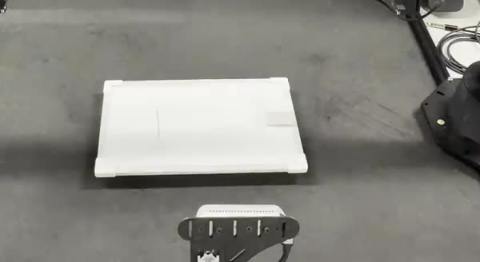
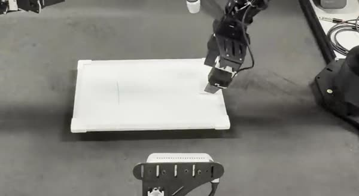
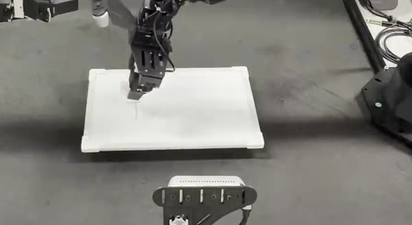
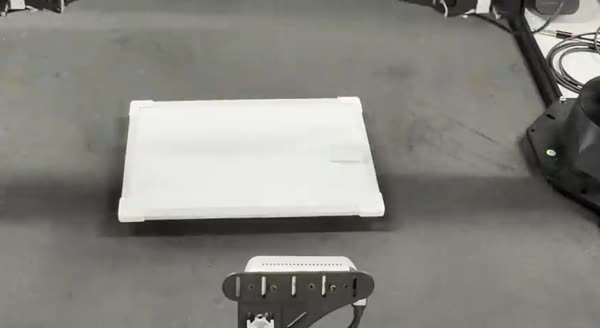

Someone draws a line anywhere on the whiteboard. Under one fixed instruction — wipe the line — the policy picks up the eraser, wipes that line off, puts the eraser back and returns to rest. No target position is given to it.
The clip below is a single autonomous attempt, played at twice speed. Nothing about the line is told to the policy — not where it is, not how long it is. The only input is what the three cameras see and the arm's own joint state, and the only instruction is the same five-word string used during training.
The right follower arm does the whole sequence; the left arm holds its pose. 11 s at 2× speed, no audio. The full-length take further down runs at real speed.
A whiteboard lies flat on the table between the two arms, with a dry eraser resting on it. A person reaches in and draws a short vertical stroke — a different place on the board each time, chosen on the spot rather than from a list. The policy then has to find that stroke, reach the eraser, bring it to the mark, wipe until the mark is gone and set the eraser back down. Every step is closed-loop from the cameras: the same instruction produces a different trajectory each time, because the mark is somewhere else.




What makes it more than a replayed trajectory. The mark moves between attempts, so a fixed script cannot solve it — the reach, the wipe stroke and the place-back all have to be re-derived from the current image. Contact is the hard part: the eraser has to be pressed against the board firmly enough to lift the ink but not so hard that the arm stalls or shoves the board out of place.
π0.5, the vision-language-action model from Physical Intelligence, loaded from the released pi05_base checkpoint and fine-tuned in openpi.
LoRA on both towers — a gemma_2b_lora PaliGemma backbone and a
gemma_300m_lora action expert — for 30,000 steps, with EMA off to keep
the run inside one GPU's memory.
Three RGB streams — one overhead camera and one on each wrist — plus the arms' joint state. No depth, no tactile sensing, no marker tracking, and no hand-written detector for the line.
One fixed prompt, “wipe the line”, identical at every step of every attempt. The instruction never encodes where the line is, so the position has to come out of the images.
| Setting | Value |
|---|---|
| config | pi05_wipe_line (openpi TrainConfig) |
| model | π0.5, LoRA on backbone and action expert |
| init | pi05_base |
| steps | 30,000 |
| cameras | cam_high, cam_left_wrist, cam_right_wrist |
| prompt | wipe the line |
| demonstrations | teleoperated on this rig, LeRobot format |
The take below is the raw recording: 2 min 59 s, one continuous shot, five attempts in a row, nothing edited out — no cuts, no speed-up, no re-takes dropped. Between attempts a person leans in to draw the next line, which is why the camera is briefly blocked at 0:26, 1:01, 1:39 and 2:12. Everything in between is the policy running on its own.
11 MB; it starts loading only when you press play. Audio is room tone and carries nothing.
Read it for what it is. This is a demonstration of one task on one rig, not a benchmark: five attempts are too few to quote a success rate from, and the eraser always starts on the board because the robot itself put it there on the previous attempt. What the take does show is that the whole sequence runs end to end, unassisted, with the mark in a different place every time.